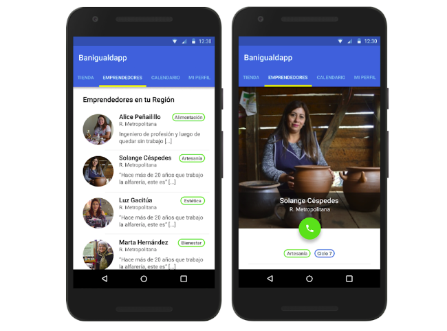
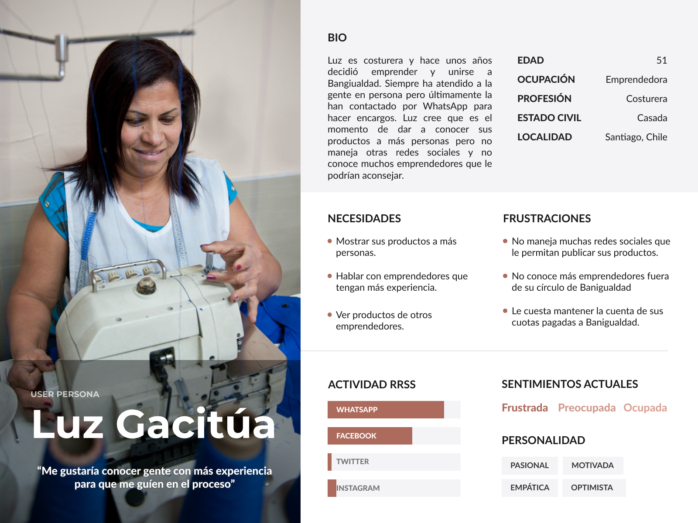

BanigualdApp
5 días
UX | UI
Trello
Entrevistas
User Persona
Sketches
Figma
Testeo
Desarrollar una aplicación móvil para emprendedores de Fundación Banigualdad, la cual debía estar enfocada en aumentar sus canales de venta a nivel nacional (de Arica a Puerto Montt), ayudar a interactuar y fortalecer la comunicación con otros emprendedores y además con la fundación.
BANIGUALDAPP es una aplicación móvil que permite conocer y conectar a emprendedores de la Fundación Banigualdad de diferentes ciudades de Chile, quienes gracias a las funciones de esta plataforma, podrán compartir información que refleje la experiencia de la persona en el rubro, también es un espacio donde el usuario puede ofrecer sus productos y visualizar información sobre su ciclo de pago.
Banigualdad es una fundación sin fines de lucro, la cual entrega microcréditos y capacitación a emprendedores de escasos recursos, siendo un apoyo para mejorar su calidad de vida y que de esta forma sean un ejemplo para otras comunidades.
Actualmente cuenta con más de 49.000 emprendedores a lo largo de todo Chile, de los cuales un 85% son mujeres. Todas estas personas tienen un gran compromiso con este apoyo, ya que existe una tasa de devolución del crédito de un 99.5%, lo que logra reflejar los principios de la fundación: responsabilidad, solidaridad y confianza.
Luego de conocer más sobre los emprendedores que forman parte de Banigualdad, mediante la investigación y entrevistas, desarrollamos una persona llamada Luz Gacitúa, herramienta que nos ayudó a tomar decisiones en nuestra propuesta final.
A partir de los resultados de las entrevistas y basándonos en nuestro User Persona, podemos definir las siguientes oportunidades:
1. Conocer a otros emprendedores desde Arica a Puerto Montt.
2. Mostrar y vender sus productos a personas de otras ciudades dentro del país.
3. Conocer el estado de sus ciclos de pago del microcrédito.
4. Compartir experiencias y conocimientos con otros emprendedores.